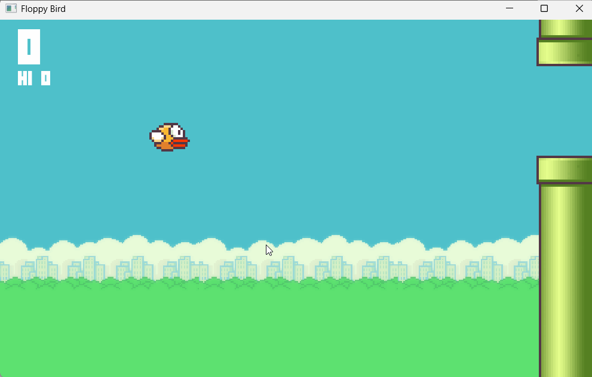

# UX + Gameplay + Core Mechanics <hr> <br> Xinxing Wu
# Outline [<p class="hover-underline-animation">Core Mechanics</p>](#/ch1) [<p class="hover-underline-animation">Gameplay</p>](#/ch2) [<p class="hover-underline-animation">User Experience / UI</p>](#/ch3) [<p class="hover-underline-animation">Lab</p>](#/ch4)
## Goal <div id="shadebox-neon" class="shadebox neon"> By the end, you can: - Describe **core mechanics** as **data + algorithms** - Build a tiny **internal economy** (sources/drains/converters/traders) - Describe gameplay as a **hierarchy of challenges** - Tune difficulty using **skill vs stress** - Choose a **saving method** (slots, quick-save, checkpoints, autosave) - Design a simple UI using **player-centric** principles </div>
## Goal (cont.) <div id="shadebox-neon" class="shadebox neon"> - **Core mechanics**: the engine rules (data + algorithms) - **Gameplay**: what the player *actually deals with* moment to moment (challenges) - **UX/UI**: how the player understands + controls the game </div>
<p class="definition-rainbow-title">Core Mechanics</p>
<div class="definition-com-container"> <div class="definition-com-title">What are “core mechanics”?</div> <div class="definition-com-shadebox"> Core mechanics are: - **Data** (numbers/values/state) - **Algorithms** (rules/logic/if-then processes) that precisely define the game’s central rules and internal operations. </div> </div> <div class="definition-pro-Y-container"> <div class="definition-pro-Y-title">“swamp timer” rule (data + algorithm)</div> <div class="definition-pro-Y-shadebox"> <div style="width: 800px;"></div> **Rule idea**: “Swamp is dangerous if you stay too long.” Turn it into core mechanics: - Data: gas_rise_rate, time_limit, avatar_position - Algorithm: - When avatar enters swamp → start gas rising - If time in swamp > limit → avatar dies - If avatar leaves swamp → gas resets </div> </div> <div class="definition-pro-Y-container"> <div class="definition-pro-Y-title">Why beginners struggle here</div> <div class="definition-pro-Y-shadebox"> Beginners write *vague* rules: - “Penalize player for taking too long” But the computer needs **exact numbers + exact triggers**: - “How long?” “What penalty?” “When does it start/stop?” </div> </div> <div class="definition-pro-Y-container"> <div class="definition-pro-Y-title">Five common mechanic “families” (overview)</div> <div class="definition-pro-Y-shadebox"> <div style="width: 800px;"></div> You’ll often see: - Physics - Internal economies - Progression mechanisms - Tactical maneuvering - Social interaction </div> </div> <div class="definition-pro-Y-container"> <div class="definition-pro-Y-title">Internal economy: what it means</div> <div class="definition-pro-Y-shadebox"> Most games have an **internal economy**: - resources/entities flow into the world - get transformed - get consumed - get traded/owned This economy can be simple (shooter) or complex (city builder). </div> </div> <div class="definition-pro-Y-container"> <div class="definition-pro-Y-title">Internal economy building blocks</div> <div class="definition-pro-Y-shadebox"> We’ll use 4 very practical terms: - **Sources**: create resources - **Drains**: permanently consume resources - **Converters**: turn resource A into resource B - **Traders**: exchange ownership (not transformation) </div> </div> <div class="definition-pro-Y-container"> <div class="definition-pro-Y-title">1.Sources — simple shooter example</div> <div class="definition-pro-Y-shadebox"> <div style="width: 800px;"></div> A **spawn point** is a *source*: - creates enemies - might create ammo, health packs A source has: - location - what it produces - how often (rate) - limits (max existing) </div> </div> <div class="definition-pro-Y-container"> <div class="definition-pro-Y-title">Source types: limited vs unlimited</div> <div class="definition-pro-Y-shadebox"> - Unlimited source: “Go” in Monopoly (bank can always pay) - Limited source: a finite supply of houses/hotels (can run out) Design choice matters: scarcity changes behavior. </div> </div> <div class="definition-pro-Y-container"> <div class="definition-pro-Y-title">2.Drains — what they do</div> <div class="definition-pro-Y-shadebox"> A **drain** is a rule that makes resources **permanently drop out**. Shooter examples: - firing drains ammo - getting hit drains health - enemies drain out by dying </div> </div> <div class="definition-pro-Y-container"> <div class="definition-pro-Y-title">Important design tip: “Explain your drains”</div> <div class="definition-pro-Y-shadebox"> Players accept losing resources more easily if the game gives a clear reason. If money disappears, the player wants to know **why**. </div> </div> <div class="definition-pro-Y-container"> <div class="definition-pro-Y-title">Drain example: “decay” in building games</div> <div class="definition-pro-Y-shadebox"> A common drain in management sims: - roads/buildings “decay” over time/use - player spends resources to repair This creates ongoing demand and planning. </div> </div> <div class="definition-pro-Y-container"> <div class="definition-pro-Y-title">3.Converters — transformation</div> <div class="definition-pro-Y-shadebox"> A converter turns resource(s) into another resource: - grain → flour (rate + ratio) - ore + coal → iron bars (ratio depends on fuel) Key design parameters: - input/output ratio - production time (rate) </div> </div> <div class="definition-pro-Y-container"> <div class="definition-pro-Y-title">4.Traders — ownership change</div> <div class="definition-pro-Y-shadebox"> A trader does NOT transform items. It only changes **who owns what**: - dirk + gold coin → short sword After trade, all items still exist; ownership changes. </div> </div> <div class="definition-pro-Y-container"> <div class="definition-pro-Y-title">Converter vs Trader (one-line test)</div> <div class="definition-pro-Y-shadebox"> <div style="width: 800px;"></div> - Converter: “A becomes B” - Trader: “A belongs to someone else now” </div> </div> <div class="definition-pro-Y-container"> <div class="definition-pro-Y-title">Build a tiny economy</div> <div class="definition-pro-Y-shadebox"> <div style="width: 800px;"></div> Design a micro-economy for a 2D game with: - 2 sources - 2 drains - 1 converter - 1 trader Write it as a table: ``` Resource | Source | Drain | Converter | Trader ``` </div> </div> <div class="definition-pro-Y-container"> <div class="definition-pro-Y-title">Example micro-economy</div> <div class="definition-pro-Y-shadebox"> <div style="width: 800px;"></div> Game: “Space Delivery” - Source: asteroids produce ore - Source: mission rewards produce credits - Drain: fuel burns while moving - Drain: ship HP drains when hit - Converter: ore → ship parts (crafting) - Trader: parts ↔ credits at a station </div> </div> <div class="definition-pro-Y-container"> <div class="definition-pro-Y-title">Core mechanics meet gameplay</div> <div class="definition-pro-Y-shadebox"> During play: - core mechanics **present challenges** - core mechanics **accept player actions** Both are mediated by the **UI**. </div> </div> <div class="definition-pro-Y-container"> <div class="definition-pro-Y-title">Practice</div> <div class="definition-pro-Y-shadebox"> <div style="width: 800px;"></div> If a shop turns “gold → sword”, is it: - a converter? - a trader? </div> </div> <div class="definition-pro-Y-container"> <div class="definition-pro-Y-title">Practice (cont.)</div> <div class="definition-pro-Y-shadebox"> Answer: usually **trader** (ownership exchange), unless the gold is “consumed to manufacture” in a transformation system. </div> </div>
<p class="definition-rainbow-title">Gameplay</p>
<div class="definition-com-container"> <div class="definition-com-title">What is gameplay</div> <div class="definition-com-shadebox"> Gameplay is not “story” or “graphics.” Gameplay is the **challenges** the player engages with. </div> </div> <div class="definition-pro-Y-container"> <div class="definition-pro-Y-title">Challenges vs Actions</div> <div class="definition-pro-Y-shadebox"> - **Challenges**: what the player is trying to overcome (mental model) - **Actions**: what the player can do (buttons/commands) Important: challenges are not always 1-to-1 with actions. </div> </div> <div class="definition-pro-Y-container"> <div class="definition-pro-Y-title">A hierarchy of challenges (5 levels idea)</div> <div class="definition-pro-Y-shadebox"> You can analyze gameplay as a hierarchy: - Top: “Complete the whole game” - Then: “Complete the current level” - …down to… - Bottom: “Atomic challenges” (smallest meaningful challenges) </div> </div> <div class="definition-pro-Y-container"> <div class="definition-pro-Y-title">Why this helps designers</div> <div class="definition-pro-Y-shadebox"> Because you must decide: - how many challenges exist at each level - how many hit the player **simultaneously** More simultaneous atomic challenges under time pressure → more stress. </div> </div> <div class="definition-pro-Y-container"> <div class="definition-pro-Y-title">Example: action platformer hierarchy</div> <div class="definition-pro-Y-shadebox"> <div style="width: 800px;"></div> - Win the game - Beat World 1 - Beat Level 1-2 - Cross this room - Jump this gap (atomic) </div> </div> <div class="definition-pro-Y-container"> <div class="definition-pro-Y-title">Multiple options exist (not one “correct” path)</div> <div class="definition-pro-Y-shadebox"> Some challenges can be solved with different actions: - stealth OR combat - talk OR fight So in some genres, you track **challenges** more than “button actions.” </div> </div> <div class="definition-pro-Y-container"> <div class="definition-pro-Y-title">Simultaneous atomic challenges (stress knob)</div> <div class="definition-pro-Y-shadebox"> Example: side-scrolling shooter: - many enemies arrive - player must handle several threats at once If you add threats quickly → stress rises. </div> </div> <div class="definition-pro-Y-container"> <div class="definition-pro-Y-title">Technique: analyze gameplay second-by-second</div> <div class="definition-pro-Y-shadebox"> <div style="width: 950px;"></div> A practical method: - record gameplay video - review in a video editor - label what the player is trying to accomplish each second This reveals the real challenge structure. </div> </div> <div class="definition-pro-Y-container"> <div class="definition-pro-Y-title">Skill vs Stress (difficulty is not one thing)</div> <div class="definition-pro-Y-shadebox"> Absolute difficulty combines: - **Intrinsic skill required** (can you do it without time pressure?) - **Stress** from time pressure / multitasking </div> </div> <div class="definition-pro-Y-container"> <div class="definition-pro-Y-title"> Easy/hard modes should often keep an inverse relationship</div> <div class="definition-pro-Y-shadebox"> <div style="width: 1100px;"></div> If a challenge requires more skill: - give more time (lower stress) If it’s high stress: - reduce skill precision demands This supports different player strengths. </div> </div> <div class="definition-pro-Y-container"> <div class="definition-pro-Y-title"> “Commonly used challenges” (starting categories)</div> <div class="definition-pro-Y-shadebox"> <div style="width: 1100px;"></div> There are many kinds of challenges; today we focus on: - **Physical coordination challenges** - reaction time / speed - accuracy / precision - intuitive physics understanding - timing / rhythm (common pattern) - (You can invent new ones, but these are reliable foundations.) </div> </div> <div class="definition-pro-Y-container"> <div class="definition-pro-Y-title">Example: “speed & reaction”</div> <div class="definition-pro-Y-shadebox"> <div style="width: 800px;"></div> Where you see it: - platformers, shooters, fast puzzle games (e.g., Tetris-like pacing) Design lever: - give more time → easier </div> </div> <div class="definition-pro-Y-container"> <div class="definition-pro-Y-title">Example: “accuracy & precision”</div> <div class="definition-pro-Y-shadebox"> <div style="width: 800px;"></div> Examples: - steering, aiming, careful positioning Difficulty lever: - widen “success range” - add aim assist / forgiveness </div> </div> <div class="definition-pro-Y-container"> <div class="definition-pro-Y-title">Example: “intuitive physics understanding”</div> <div class="definition-pro-Y-shadebox"> <div style="width: 800px;"></div> Players learn: - braking distance, acceleration, turning - ballistic arcs (Angry Birds style intuition) Design lever: - keep physics consistent and predictable </div> </div> <div class="definition-pro-Y-container"> <div class="definition-pro-Y-title">Saving the game is part of player-centric design</div> <div class="definition-pro-Y-shadebox"> <div style="width: 800px;"></div> Design rule (practical): Unless your game is extremely short or has no storage, **allow the player to save and reload.** </div> </div> <div class="definition-pro-Y-container"> <div class="definition-pro-Y-title">Saving methods (pros/cons)</div> <div class="definition-pro-Y-shadebox"> - **Save slots / files** - Pro: many named saves, flexible - Con: can break immersion (looks like OS file UI) - **Quick-save** - Pro: fast, stays in the game world - Con: usually limited slots, less flexibility </div> </div> <div class="definition-pro-Y-container"> <div class="definition-pro-Y-title">Saving methods (cont.)</div> <div class="definition-pro-Y-shadebox"> - **Autosave / checkpoints** - Pro: least effort for player - Con: can trap player in “immediate death loop” if badly placed </div> </div> <div class="definition-pro-Y-container"> <div class="definition-pro-Y-title">Checkpoint placement mistakes to avoid</div> <div class="definition-pro-Y-shadebox"> Avoid: - saving before customization → player loses tuned changes - autosaving at a “you will die instantly” moment Prefer: - safe spots - before major decisions / big fights - after long noninteractive sequences (cinematics, long travel) </div> </div> <div class="definition-pro-Y-container"> <div class="definition-pro-Y-title">“No saving” to prevent trial-and-error?</div> <div class="definition-pro-Y-shadebox"> <div style="width: 800px;"></div> Blocking saves to force difficulty is usually lazy: - adds frustration and boredom Better: - design harder (more interesting) challenges instead. </div> </div>
<p class="definition-rainbow-title">User Experience / UI</p>
<div class="definition-com-container"> <div class="definition-com-title">UX vs UI</div> <div class="definition-com-shadebox"> - **UI**: the controls + screens the player uses - **UX**: the overall feeling: clarity, flow, comfort, confidence Good UX usually means: - player understands goals - player understands feedback - player feels in control </div> </div> <div class="definition-pro-Y-container"> <div class="definition-pro-Y-title">Player-centric principle (UI edition)</div> <div class="definition-pro-Y-shadebox"> <div style="width: 800px;"></div> A UI should help the player: - know what matters *now* - understand what happened - know what to do next - do it with minimal friction </div> </div> <div class="definition-pro-Y-container"> <div class="definition-pro-Y-title">General UI principles (high value)</div> <div class="definition-pro-Y-shadebox"> <div style="width: 800px;"></div> - **Be consistent** - Provide **clear feedback** - Give player **control** - **Limit steps** for common tasks </div> </div> <div class="definition-pro-Y-container"> <div class="definition-pro-Y-title">“Don’t innovate unless it’s better”</div> <div class="definition-pro-Y-shadebox"> Players learn conventions: - WASD movement - mouse look - “red means danger” Unnecessary novelty costs mental energy. </div> </div> <div class="definition-pro-Y-container"> <div class="definition-pro-Y-title">UI design process (practical steps)</div> <div class="definition-pro-Y-shadebox"> <div style="width: 800px;"></div> - Define gameplay modes (exploring, combat, menu, etc.) - Decide interaction model + camera model - Create a **flowboard** (screen-to-screen map) - Sketch each screen (what info + what controls) - Prototype → playtest → refine </div> </div> <div class="definition-pro-Y-container"> <div class="definition-pro-Y-title">Breadth vs Depth (menu design)</div> <div class="definition-pro-Y-shadebox"> <div style="width: 800px;"></div> - **Breadth**: many options on one screen - **Depth**: fewer options but more submenus Beginners often create deep menus that hide key actions. Goal: - keep common actions shallow and obvious. </div> </div> <div class="definition-pro-Y-container"> <div class="definition-pro-Y-title">Avoid “obscurity”</div> <div class="definition-pro-Y-shadebox"> If the player can’t find a feature, it feels like the game is broken. Use: - clear labels - consistent icons - predictable placement </div> </div> <div class="definition-pro-Y-container"> <div class="definition-pro-Y-title">Interaction models (choose one)</div> <div class="definition-pro-Y-shadebox"> <div style="width: 800px;"></div> Common models: - **Avatar-based**: player controls one character (most common) - **Multipresent**: player exists in multiple places at once (RTS-style control) - **Party-based**: control a team (RPG party) - **Contestant**: player is a competitor (sports/fighting framing) - **Desktop**: like a computer interface inside the game (strategy/management) </div> </div> <div class="definition-pro-Y-container"> <div class="definition-pro-Y-title">Why interaction model matters</div> <div class="definition-pro-Y-shadebox"> Because it changes: - what info must be always visible - what controls must be fast - what the camera should prioritize Example: - RTS needs minimap + group selection tools - Avatar action game needs health/ammo/target feedback </div> </div> <div class="definition-pro-Y-container"> <div class="definition-pro-Y-title">Camera model</div> <div class="definition-pro-Y-shadebox"> Camera choices change UI needs. Examples: - side-scroller - top-down - first-person - third-person chase camera </div> </div> <div class="definition-pro-Y-container"> <div class="definition-pro-Y-title">Film-style camera movement vocabulary</div> <div class="definition-pro-Y-shadebox"> - **Pan**: rotate left/right - **Tilt**: rotate up/down - **Dolly**: move forward/back - **Truck**: move left/right - **Crane**: move up/down - **Roll**: rotate around viewing axis You don’t need to be “cinematic,” but these terms help you communicate. </div> </div> <div class="definition-pro-Y-container"> <div class="definition-pro-Y-title">Visual UI building blocks</div> <div class="definition-pro-Y-shadebox"> - HUD: health, ammo, stamina, money - Indicators: reticle, hit markers, warnings - Maps/minimaps - Menus: inventory, pause, settings - Text: objectives, tooltips, subtitles </div> </div> <div class="definition-pro-Y-container"> <div class="definition-pro-Y-title">Example: good feedback loop</div> <div class="definition-pro-Y-shadebox"> Action: player presses “attack” Feedback: - animation plays - sound effect - enemy health reduces - small hit flash Player learns: “my action worked.” </div> </div> <div class="definition-pro-Y-container"> <div class="definition-pro-Y-title">Controls: mapping and learning</div> <div class="definition-pro-Y-shadebox"> Beginner-friendly guidance: - map common actions to easy buttons - don’t overload one button with 5 meanings unless well taught - keep “emergency” actions fast (pause, heal, back) </div> </div> <div class="definition-pro-Y-container"> <div class="definition-pro-Y-title">Support player preferences (common settings)</div> <div class="definition-pro-Y-shadebox"> <div style="width: 1000px;"></div> Examples of player control options: - invert look - sensitivity sliders - key rebinding - accessibility toggles (where relevant) - reset to defaults </div> </div> <div class="definition-pro-Y-container"> <div class="definition-pro-Y-title">Menus and “shell” experience</div> <div class="definition-pro-Y-shadebox"> <div style="width: 800px;"></div> Players often see: - start screen - options - save/load - credits </div> </div> <div class="definition-pro-Y-container"> <div class="definition-pro-Y-title">Menus and “shell” experience (cont.)</div> <div class="definition-pro-Y-shadebox"> <div style="width: 800px;"></div> Make it: - fast to reach gameplay - consistent - readable </div> </div> <div class="definition-pro-Y-container"> <div class="definition-pro-Y-title">Saving system is both UX + gameplay</div> <div class="definition-pro-Y-shadebox"> <div style="width: 800px;"></div> Saving affects: - immersion - frustration - willingness to experiment Pick the saving system that supports your game’s pacing. </div> </div> <div class="definition-pro-Y-container"> <div class="definition-pro-Y-title">One-screen UI sketch</div> <div class="definition-pro-Y-shadebox"> <div style="width: 800px;"></div> Pick one gameplay mode (combat or exploration). Sketch (paper or whiteboard): - 5 things the player must always know - 3 actions the player must do quickly - 2 optional actions (rare but needed) </div> </div> <div class="definition-pro-Y-container"> <div class="definition-pro-Y-title">Example UI sketch (top-down shooter)</div> <div class="definition-pro-Y-shadebox"> Always know: - HP, ammo, objective, minimap, current weapon Fast actions: - shoot, dodge, reload Optional: - open inventory, change settings </div> </div> <div class="definition-pro-Y-container"> <div class="definition-pro-Y-title">How the 3 chapters connect</div> <div class="definition-pro-Y-shadebox"> - Core mechanics create rules + resource flows - Challenges (gameplay) are what the player experiences - UX/UI is how the player understands and acts in that system </div> </div>
<p class="definition-rainbow-title">Lab</p>
<div class="definition-com-container"> <div class="definition-com-title">Materials</div> <div class="definition-com-shadebox"> <a href="./files/Chapter 12. Creating the User Experience.pdf" target="_blank">Chapter 12. Creating the User Experience</a> <a href="./files/Chapter Chapter 13. Gameplay.pdf" target="_blank">Chapter 13. Gameplay</a> <a href="./files/Chapter 14. Core Mechanics.pdf" target="_blank">Chapter 14. Core Mechanics</a> </div> </div> <div class="definition-com-container"> <div class="definition-com-title">True/False</div> <div class="definition-com-shadebox"> Core mechanics are the game’s state/data + rules/algorithms that govern how it runs. <button type="button" class="reveal-btn" data-answer="answer-e1">Show Answer</button> <div id="answer-e1" class="answer-box"> <b>Answer:</b> True </div> </div> </div> <div class="definition-com-container"> <div class="definition-com-title">True/False</div> <div class="definition-com-shadebox"> A trader changes ownership/exchange; a converter transforms resources (e.g., ore → iron). <button type="button" class="reveal-btn" data-answer="answer-e2">Show Answer</button> <div id="answer-e2" class="answer-box"> <b>Answer:</b> False </div> </div> </div> <div class="definition-com-container"> <div class="definition-com-title">True/False</div> <div class="definition-com-shadebox"> You can analyze gameplay by identifying the challenges the player faces, not just the button inputs. <button type="button" class="reveal-btn" data-answer="answer-e3">Show Answer</button> <div id="answer-e3" class="answer-box"> <b>Answer:</b> True </div> </div> </div> <div class="definition-com-container"> <div class="definition-com-title">True/False</div> <div class="definition-com-shadebox"> Fewer simultaneous atomic challenges usually reduces stress and cognitive load. <button type="button" class="reveal-btn" data-answer="answer-e4">Show Answer</button> <div id="answer-e4" class="answer-box"> <b>Answer:</b> True </div> </div> </div> <div class="definition-com-container"> <div class="definition-com-title">True/False</div> <div class="definition-com-shadebox"> Poorly placed autosaves/checkpoints can cause frustration (e.g., saving right before an unavoidable death loop). <button type="button" class="reveal-btn" data-answer="answer-e5">Show Answer</button> <div id="answer-e5" class="answer-box"> <b>Answer:</b>False </div> </div> </div> <div class="definition-com-container"> <div class="definition-com-title">Descriptive Question</div> <div class="definition-com-shadebox"> Core mechanics vs gameplay vs UX/UI <button type="button" class="reveal-btn" data-answer="answer-e6">Show Answer</button> <div id="answer-e6" class="answer-box"> <b>Answer:</b> Core mechanics: the rules + data that make the game function (state variables and algorithms). Example (Minecraft): hunger decreases over time; eating restores hunger; health regenerates when hunger is high. Gameplay: the challenges and decisions the player experiences while using those mechanics. Example (Minecraft): deciding whether to explore a cave now or return to base because you’re low on food and tools. UX/UI: how clearly and comfortably the player can understand and control the game (menus, HUD, feedback, control feel). Example (Minecraft): hotbar for quick item access, heart icons for health, hunger bar, clear crafting grid layout. </div> </div> </div> <div class="definition-com-container"> <div class="definition-com-title">Descriptive Question</div> <div class="definition-com-shadebox"> Internal economy design <button type="button" class="reveal-btn" data-answer="answer-e7">Show Answer</button> <div id="answer-e7" class="answer-box"> <b>Answer:</b> Internal economy: a system of resources and entities flowing through the game via creation, consumption, transformation, and exchange. Roles: Sources: create resources (spawn/generate). Drains: permanently consume resources (remove them from play). Converters: transform resource A into resource B (A → B). Traders: exchange ownership of resources (A ↔ B), not transformation. Example 2D game economy: “Dungeon Courier” Resources: coins, stamina, potions, keys Source: enemies drop coins (coin source). Drain: sprinting consumes stamina (stamina drain). Converter: at an alchemy table: 3 coins → 1 potion (converter). Trader: shopkeeper: 5 coins ↔ 1 key (trade/ownership exchange). </div> </div> </div> <div class="definition-com-container"> <div class="definition-com-title">Descriptive Question</div> <div class="definition-com-shadebox"> Challenge hierarchy (gameplay analysis) <button type="button" class="reveal-btn" data-answer="answer-e8">Show Answer</button> <div id="answer-e8" class="answer-box"> <b>Answer:</b> A challenge hierarchy organizes gameplay challenges from big goals down to small “atomic” tasks. Why it helps: You can see what the player is really doing, moment by moment. Example game concept: “Lantern Escape” (Level 1) Level 1 goal: Escape the ruins with one relic Hierarchy (5 levels): Win the game; Complete the ruins (all levels); Complete Level 1 (Outer Ruins); Reach the exit area with the relic; Atomic challenges (bottom level) 5 atomic challenges A1) Navigate a hallway without hitting traps; A2) Avoid a patrolling enemy for 10 seconds; A3) Find and pick up the relic; A4) Use a key to open a locked door; A5) Reach the exit zone before the timer hits 0 You can tune pacing and difficulty by adjusting the number and intensity of atomic challenges (and how many happen at once). </div> </div> </div> <div class="definition-com-container"> <div class="definition-com-title">Descriptive Question</div> <div class="definition-com-shadebox"> Skill vs stress in difficulty <button type="button" class="reveal-btn" data-answer="answer-e9">Show Answer</button> <div id="answer-e9" class="answer-box"> <b>Answer:</b> Intrinsic skill: how hard the task is even with plenty of time (precision, timing, planning, strategy). Stress: pressure caused by time limits, multitasking, simultaneous threats, or punishment severity. Make easier by lowering stress (without lowering skill) Keep the jump just as precise, but give more time or reduce simultaneous threats. Example: keep the same narrow platform jump, but remove the chasing enemy during that section. Make easier by lowering skill (without lowering stress) Keep the timer pressure, but make the action easier to execute. Example: keep the 10-second delivery timer, but widen the delivery zone or add steering assist. </div> </div> </div> <div class="definition-com-container"> <div class="definition-com-title">Descriptive Question</div> <div class="definition-com-shadebox"> Saving systems as player-centric design <button type="button" class="reveal-btn" data-answer="answer-e10">Show Answer</button> <div id="answer-e10" class="answer-box"> <b>Answer:</b> A) Save slots (manual saves) Advantage: player can keep multiple named saves and recover from mistakes. Risk: can break immersion and may encourage “save scumming” if not intended. Best use: long RPGs or complex strategy games where players want safety and flexibility. B) Quick-save / quick-load Advantage: fast, low-friction, keeps the player in the flow. Risk: players can overwrite a good state with a bad one; may reduce tension if overused. Best use: stealth or sim-style games where experimentation is part of learning (try a plan, quick-load, try again). C) Checkpoints / autosave Advantage: minimal effort for the player; good for smooth pacing and beginners. Risk: bad checkpoint placement can cause “death loops” (autosave right before unavoidable failure). Best use: action/adventure levels with clear segments (after a fight, before a boss, after solving a puzzle). </div> </div> </div> <div class="definition-pro-Y-container"> <div class="definition-pro-Y-title">Lab</div> <div class="definition-pro-Y-shadebox"> Courier City (Top-down delivery) — Economy + Challenges + UX + Saving </div> </div> <div class="definition-pro-Y-container"> <div class="definition-pro-Y-title">Lab</div> <div class="definition-pro-Y-shadebox"> What students build A small delivery game where the player must: - Deliver 5 packages before time ends - Manage an internal economy: - Sources: deliveries give cash - Drains: fuel drains while moving; time drains continuously; damage drains car health - Converters: cash → fuel at gas station; cash → repairs at garage - Trader: “Contract terminal” swaps contract choice (ownership of active job) </div> </div> <div class="definition-pro-Y-container"> <div class="definition-pro-Y-title">Lab</div> <div class="definition-pro-Y-shadebox"> What students build A small delivery game where the player must: - Save/load: - Quick-save (F5) / Quick-load (F9) - Autosave on each delivery completion (safe checkpoint) </div> </div> <div class="definition-pro-Y-container"> <div class="definition-pro-Y-title">Lab</div> <div class="definition-pro-Y-shadebox"> Deliverables - runnable program - 1-page write-up: - economy table + 10 atomic challenges + UX decisions </div> </div> <div class="definition-pro-Y-container"> <div class="definition-pro-Y-title">Answer</div> <div class="definition-pro-Y-shadebox"> ``` // ============================== // Project: Courier City (SFML 3.x) // Single-file beginner version // ============================== #include <SFML/Graphics.hpp> #include <SFML/System.hpp> #include <SFML/Window.hpp> #include <fstream> #include <sstream> #include <string> #include <vector> #include <cmath> #include <algorithm> #include <optional> // ---------- small math helpers ---------- static float length(sf::Vector2f v) { return std::sqrt(v.x * v.x + v.y * v.y); } static sf::Vector2f normalize(sf::Vector2f v) { float len = length(v); if (len < 0.00001f) return { 0.f, 0.f }; return { v.x / len, v.y / len }; } static float clampf(float x, float lo, float hi) { return std::max(lo, std::min(hi, x)); } // SFML 3: FloatRect::intersects removed. // Use a simple AABB overlap check. static bool intersectsAABB(const sf::FloatRect& a, const sf::FloatRect& b) { return (a.position.x < b.position.x + b.size.x) && (a.position.x + a.size.x > b.position.x) && (a.position.y < b.position.y + b.size.y) && (a.position.y + a.size.y > b.position.y); } // ---------- Save system ---------- struct SaveData2 { float px = 120.f; float py = 120.f; float vx = 0.f; float vy = 0.f; int fuel = 100; int timeLeft = 180; int cash = 0; int damage = 0; // 0..100 int delivered = 0; int contractId = 0; }; static void writeSaveFile(const std::string& path, const SaveData2& s) { std::ofstream out(path.c_str(), std::ios::out); if (!out.is_open()) return; out << "px=" << s.px << "\n"; out << "py=" << s.py << "\n"; out << "vx=" << s.vx << "\n"; out << "vy=" << s.vy << "\n"; out << "fuel=" << s.fuel << "\n"; out << "timeLeft=" << s.timeLeft << "\n"; out << "cash=" << s.cash << "\n"; out << "damage=" << s.damage << "\n"; out << "delivered=" << s.delivered << "\n"; out << "contractId=" << s.contractId << "\n"; } static bool readSaveFile(const std::string& path, SaveData2& s) { std::ifstream in(path.c_str(), std::ios::in); if (!in.is_open()) return false; std::string line; while (std::getline(in, line)) { std::size_t eq = line.find('='); if (eq == std::string::npos) continue; std::string key = line.substr(0, eq); std::string val = line.substr(eq + 1); std::stringstream ss(val); if (key == "px") ss >> s.px; else if (key == "py") ss >> s.py; else if (key == "vx") ss >> s.vx; else if (key == "vy") ss >> s.vy; else if (key == "fuel") ss >> s.fuel; else if (key == "timeLeft") ss >> s.timeLeft; else if (key == "cash") ss >> s.cash; else if (key == "damage") ss >> s.damage; else if (key == "delivered") ss >> s.delivered; else if (key == "contractId") ss >> s.contractId; } return true; } // ---------- Extra credit shader demo ---------- static bool buildShader(sf::Shader& shader) { const std::string vertexSrc = "void main() {" " gl_Position = gl_ModelViewProjectionMatrix * gl_Vertex;" " gl_FrontColor = gl_Color;" "}"; const std::string fragmentSrc = "uniform float u_time;" "void main() {" " float wave = 0.5 + 0.5 * sin(u_time + gl_FragCoord.y * 0.03);" " vec4 c = gl_Color;" " gl_FragColor = vec4(c.rgb * wave, 1.0);" "}"; return shader.loadFromMemory(vertexSrc, fragmentSrc); } // Edge-trigger helper (so F5/F9/C/E/R don't spam if held) struct KeyEdge { bool prev = false; bool pressedThisFrame(bool nowDown) { bool fired = nowDown && !prev; prev = nowDown; return fired; } }; int main() { const int W = 960; const int H = 540; // SFML 3: VideoMode uses vector size sf::RenderWindow window(sf::VideoMode({ (unsigned)W, (unsigned)H }), "Project 2: Courier City (SFML 3.x)"); window.setFramerateLimit(60); // Font / Text (SFML 3: openFromFile, and Text has no default ctor) sf::Font font; bool fontOk = font.openFromFile("assets/Roboto-Regular.ttf"); sf::Text hud(font, "", 16); hud.setPosition({ 10.f, 10.f }); sf::Text msg(font, "", 18); msg.setPosition({ 10.f, (float)H - 30.f }); std::string messageStr = ""; float messageTimer = 0.f; auto setMessage = [&](const std::string& s) { messageStr = s; messageTimer = 2.0f; }; // Car (player) sf::RectangleShape car({ 32.f, 18.f }); car.setOrigin(car.getSize() * 0.5f); car.setPosition({ 120.f, 120.f }); sf::Vector2f vel(0.f, 0.f); float accel = 260.f; float maxSpeed = 220.f; float friction = 0.90f; // Core mechanic state int fuel = 100; int timeLeft = 180; int cash = 0; int damage = 0; // 0..100 int delivered = 0; // 0..5 int contractId = 0; // trader chooses active contract // Timers float secondTimer = 0.f; float fuelTimer = 0.f; // Delivery zones (5) std::vector<sf::RectangleShape> deliveries; auto addDelivery = [&](float x, float y) { sf::RectangleShape d({ 60.f, 40.f }); d.setOrigin(d.getSize() * 0.5f); d.setPosition({ x, y }); deliveries.push_back(d); }; addDelivery(820.f, 110.f); addDelivery(820.f, 430.f); addDelivery(520.f, 260.f); addDelivery(220.f, 420.f); addDelivery(220.f, 260.f); std::vector<bool> done(deliveries.size(), false); // Gas station (converter cash->fuel) sf::RectangleShape gas({ 70.f, 55.f }); gas.setOrigin(gas.getSize() * 0.5f); gas.setPosition({ 120.f, 480.f }); // Garage (converter cash->repair) sf::RectangleShape garage({ 80.f, 55.f }); garage.setOrigin(garage.getSize() * 0.5f); garage.setPosition({ 480.f, 80.f }); // Contract terminal (trader) sf::RectangleShape terminal({ 70.f, 55.f }); terminal.setOrigin(terminal.getSize() * 0.5f); terminal.setPosition({ 840.f, 260.f }); // Traffic hazards struct Traffic { sf::RectangleShape shape; sf::Vector2f vel; }; std::vector<Traffic> traffic; for (int i = 0; i < 4; i++) { Traffic t; t.shape = sf::RectangleShape({ 34.f, 18.f }); t.shape.setOrigin(t.shape.getSize() * 0.5f); t.shape.setPosition({ 300.f + i * 120.f, 160.f + i * 80.f }); t.vel = { (i % 2 == 0) ? 80.f : -80.f, 0.f }; traffic.push_back(t); } // Shader triangle demo bool showShaderDemo = false; sf::Shader shader; bool shaderOk = buildShader(shader); sf::VertexArray tri(sf::PrimitiveType::Triangles, 3); tri[0].position = { 90.f, 90.f }; tri[1].position = { 220.f, 90.f }; tri[2].position = { 155.f, 210.f }; tri[0].color = sf::Color::Yellow; tri[1].color = sf::Color::Cyan; tri[2].color = sf::Color::Magenta; float shaderTime = 0.f; bool gameOver = false; bool gameWin = false; auto doQuickSave = [&]() { SaveData2 sd; sd.px = car.getPosition().x; sd.py = car.getPosition().y; sd.vx = vel.x; sd.vy = vel.y; sd.fuel = fuel; sd.timeLeft = timeLeft; sd.cash = cash; sd.damage = damage; sd.delivered = delivered; sd.contractId = contractId; writeSaveFile("save_courier.txt", sd); setMessage("Quick-saved!"); }; auto doQuickLoad = [&]() { SaveData2 sd; if (readSaveFile("save_courier.txt", sd)) { car.setPosition({ sd.px, sd.py }); vel = { sd.vx, sd.vy }; fuel = sd.fuel; timeLeft = sd.timeLeft; cash = sd.cash; damage = sd.damage; delivered = sd.delivered; contractId = sd.contractId; std::fill(done.begin(), done.end(), false); for (int i = 0; i < delivered && i < (int)done.size(); i++) done[i] = true; setMessage("Quick-loaded!"); } else { setMessage("No save file found."); } }; // Key edges (one-shot) KeyEdge kF5, kF9, kO, kE, kR, kC; sf::Clock clock; while (window.isOpen()) { float dt = clock.restart().asSeconds(); dt = clampf(dt, 0.f, 0.05f); // SFML 3 event loop while (auto ev = window.pollEvent()) { // easiest beginner-safe: only handle window close if (ev->is<sf::Event::Closed>()) window.close(); } // One-shot hotkeys (SFML 3 keys: sf::Keyboard::Key::X) if (kF5.pressedThisFrame(sf::Keyboard::isKeyPressed(sf::Keyboard::Key::F5))) doQuickSave(); if (kF9.pressedThisFrame(sf::Keyboard::isKeyPressed(sf::Keyboard::Key::F9))) doQuickLoad(); if (kO.pressedThisFrame(sf::Keyboard::isKeyPressed(sf::Keyboard::Key::O))) { showShaderDemo = !showShaderDemo; if (!shaderOk) { showShaderDemo = false; setMessage("Shader not supported on this GPU/driver."); } else { setMessage("Shader demo toggled (vertices -> GPU -> pixels)."); } } if (!gameOver && !gameWin) { // time drain secondTimer += dt; if (secondTimer >= 1.f) { secondTimer -= 1.f; timeLeft = std::max(0, timeLeft - 1); if (timeLeft == 0) gameOver = true; } // movement input sf::Vector2f input(0.f, 0.f); if (sf::Keyboard::isKeyPressed(sf::Keyboard::Key::W)) input.y -= 1.f; if (sf::Keyboard::isKeyPressed(sf::Keyboard::Key::S)) input.y += 1.f; if (sf::Keyboard::isKeyPressed(sf::Keyboard::Key::A)) input.x -= 1.f; if (sf::Keyboard::isKeyPressed(sf::Keyboard::Key::D)) input.x += 1.f; float speedNow = length(vel); // fuel drain fuelTimer += dt; if (fuelTimer >= 0.5f) { fuelTimer -= 0.5f; if (speedNow > 20.f) fuel = std::max(0, fuel - 1); if (fuel == 0) vel *= 0.60f; } float dmgFactor = 1.f - (damage / 150.f); dmgFactor = clampf(dmgFactor, 0.4f, 1.f); if (fuel > 0) vel += normalize(input) * accel * dmgFactor * dt; // brake if (sf::Keyboard::isKeyPressed(sf::Keyboard::Key::Space)) vel *= 0.80f; // cap speed float maxSp = maxSpeed * dmgFactor; float vlen = length(vel); if (vlen > maxSp) vel = normalize(vel) * maxSp; // move car.move(vel * dt); vel *= friction; // bounds sf::Vector2f p = car.getPosition(); p.x = clampf(p.x, 16.f, W - 16.f); p.y = clampf(p.y, 16.f, H - 16.f); car.setPosition(p); // traffic for (std::size_t i = 0; i < traffic.size(); i++) { traffic[i].shape.move(traffic[i].vel * dt); sf::Vector2f tp = traffic[i].shape.getPosition(); if (tp.x < 40.f || tp.x > W - 40.f) traffic[i].vel.x *= -1.f; if (intersectsAABB(car.getGlobalBounds(), traffic[i].shape.getGlobalBounds())) { damage = std::min(100, damage + 5); setMessage("Collision! +5 damage (Drain)"); vel *= -0.5f; if (damage >= 100) gameOver = true; } } // gas converter (E one-shot) if (kE.pressedThisFrame(sf::Keyboard::isKeyPressed(sf::Keyboard::Key::E))) { float d = length(car.getPosition() - gas.getPosition()); if (d < 70.f) { if (cash >= 5 && fuel < 100) { cash -= 5; fuel = std::min(100, fuel + 10); setMessage("Converted: $5 -> +10 fuel (Converter)"); } else setMessage("Need $5, and fuel must be < 100."); } } // garage converter (R one-shot) if (kR.pressedThisFrame(sf::Keyboard::isKeyPressed(sf::Keyboard::Key::R))) { float d = length(car.getPosition() - garage.getPosition()); if (d < 70.f) { if (cash >= 10 && damage > 0) { cash -= 10; damage = std::max(0, damage - 20); setMessage("Converted: $10 -> -20 damage (Converter)"); } else setMessage("Need $10, and damage must be > 0."); } } // contract terminal (C one-shot) if (kC.pressedThisFrame(sf::Keyboard::isKeyPressed(sf::Keyboard::Key::C))) { float d = length(car.getPosition() - terminal.getPosition()); if (d < 70.f) { contractId = (contractId + 1) % 3; setMessage("Traded contract (Trader): active contract changed."); } } // deliveries float sp = length(vel); for (std::size_t i = 0; i < deliveries.size(); i++) { if (done[i]) continue; if (intersectsAABB(car.getGlobalBounds(), deliveries[i].getGlobalBounds())) { if (sp < 30.f) { done[i] = true; delivered += 1; int reward = 10; if (contractId == 1) reward = 12; if (contractId == 2) reward = 15; cash += reward; setMessage("Delivered! +" + std::to_string(reward) + " cash (Source)"); doQuickSave(); if (delivered >= 5) gameWin = true; } else { setMessage("Slow down to deliver (park)."); } } } } // message timer if (messageTimer > 0.f) { messageTimer -= dt; if (messageTimer <= 0.f) messageStr = ""; } shaderTime += dt; // draw window.clear(sf::Color(25, 28, 35)); car.setFillColor(sf::Color(220, 220, 255)); gas.setFillColor(sf::Color(70, 150, 80)); garage.setFillColor(sf::Color(120, 120, 180)); terminal.setFillColor(sf::Color(160, 110, 70)); window.draw(gas); window.draw(garage); window.draw(terminal); for (std::size_t i = 0; i < deliveries.size(); i++) { deliveries[i].setFillColor(done[i] ? sf::Color(70, 70, 70) : sf::Color(150, 80, 80)); window.draw(deliveries[i]); } for (std::size_t i = 0; i < traffic.size(); i++) { traffic[i].shape.setFillColor(sf::Color(200, 140, 80)); window.draw(traffic[i].shape); } window.draw(car); if (showShaderDemo && shaderOk) { shader.setUniform("u_time", shaderTime); window.draw(tri, &shader); } if (fontOk) { std::stringstream ss; ss << "Fuel: " << fuel << " Time: " << timeLeft << " Cash: $" << cash << " Damage: " << damage << " Delivered: " << delivered << "/5" << " Contract: " << contractId << "\n"; if (gameWin) ss << "YOU WIN! (All deliveries done)\n"; else if (gameOver) ss << "GAME OVER! (Time=0 or Damage=100)\n"; else ss << "Goal: Deliver 5 packages. E=Fuel, R=Repair, C=Contract. F5/F9 Save/Load\n"; hud.setString(ss.str()); window.draw(hud); if (!messageStr.empty()) { msg.setString(messageStr); window.draw(msg); } } else { // If no font, at least show score in title window.setTitle("Courier City - Fuel " + std::to_string(fuel) + " Time " + std::to_string(timeLeft) + " Cash $" + std::to_string(cash) + " Delivered " + std::to_string(delivered) + "/5"); } window.display(); } return 0; } ``` </div> </div> <div class="definition-pro-Y-container"> <div class="definition-pro-Y-title">Note</div> <div class="definition-pro-Y-shadebox"> It’s a 2D top-down delivery mini-game (“Courier City”). You drive a small car around a city and try to deliver 5 packages before the timer hits 0. - Goal (win): deliver 5 packages (park on a delivery zone and slow down to deliver). - Lose conditions: timeLeft = 0 or damage = 100 (too many crashes). - Drains (things that get worse over time): - Time constantly counts down. - Fuel decreases while you’re moving. - Damage increases when you collide with moving traffic. </div> </div> <div class="definition-pro-Y-container"> <div class="definition-pro-Y-title">Note</div> <div class="definition-pro-Y-shadebox"> It’s a 2D top-down delivery mini-game (“Courier City”). You drive a small car around a city and try to deliver 5 packages before the timer hits 0. - Source (how you earn resources): - Each successful delivery gives you cash (more cash if you picked a better contract). - Converters (cash → survival): - At the gas station, spend cash to buy fuel. - At the garage, spend cash to repair (reduce damage). </div> </div> <div class="definition-pro-Y-container"> <div class="definition-pro-Y-title">Note</div> <div class="definition-pro-Y-shadebox"> - Trader (strategy choice): - At the terminal, you can switch contractId (changes how much cash deliveries pay). </div> </div> <div class="definition-pro-Y-container"> <div class="definition-pro-Y-title">Note</div> <div class="definition-pro-Y-shadebox"> It’s a 2D top-down delivery mini-game (“Courier City”). - Quality-of-life / learning features: - Quick-save (F5) and quick-load (F9). - Optional shader triangle demo (toggle) to show “vertices → GPU → pixels”. So overall: manage time + fuel + damage, choose a contract, avoid traffic, and plan routes to finish 5 deliveries in time. </div> </div> <div class="definition-pro-Y-container"> <div class="definition-pro-Y-title">SFML balance lab</div> <div class="definition-pro-Y-shadebox"> Build a small top-down arena game where the player survives waves and learns balancing concepts by playing: </div> </div> <p></p> <div class="definition-pro-Y-container"> <div class="definition-pro-Y-title">Note</div> <div class="definition-pro-Y-shadebox"> - Set working directory so ./images ./audio ./fonts can be found: - Project → Properties → Configuration Properties → Debugging → Working Directory - set to: $(ProjectDir) </div> </div> <div class="definition-pro-Y-container"> <div class="definition-pro-Y-title">Note</div> <div class="definition-pro-Y-shadebox"> <a href="./files/FlappyBird.zip">Codes</a> </div> </div>